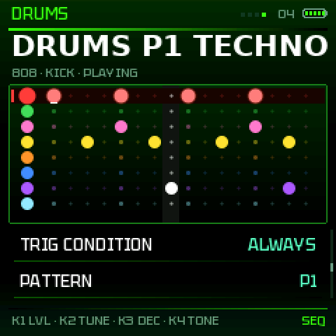
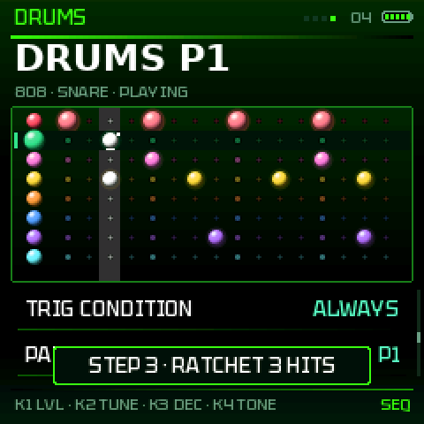
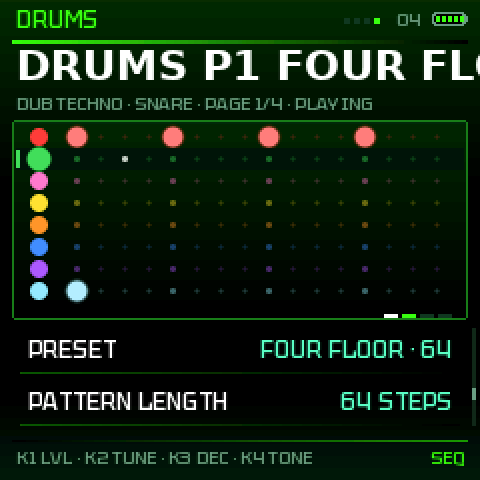
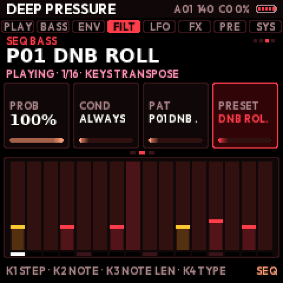
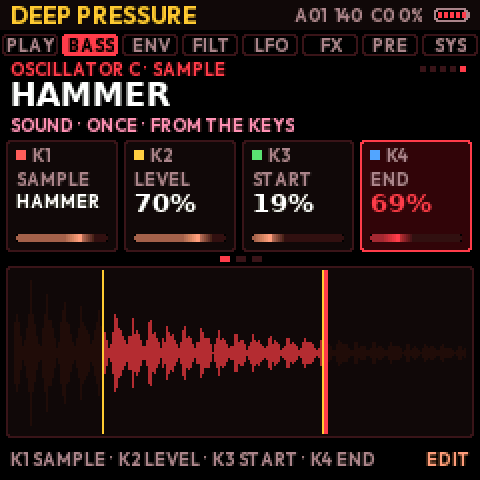
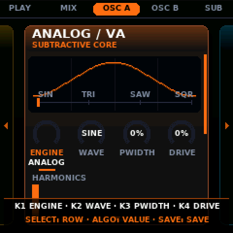
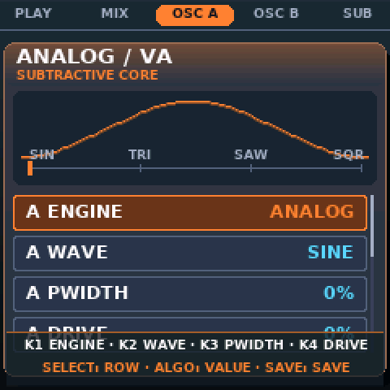
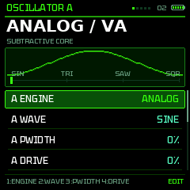
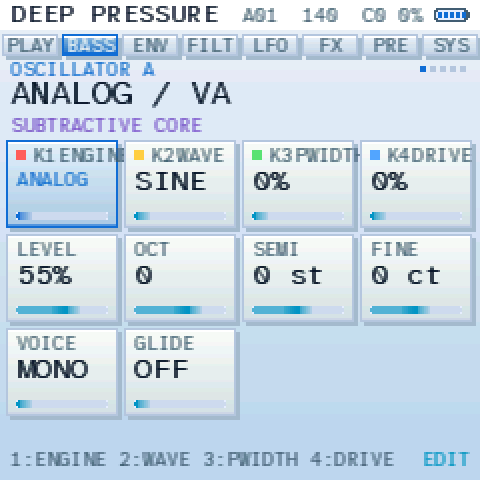

The K-WASUB manual
A modern bass synth for the M-VAVE FM-1. The 27 keys play, K1–K4 set what the screen shows (written at the bottom), the buttons open the pages. Short on purpose: what you see on the screen is not explained again.

- 9 engines + FOLD, two oscillators, a sub, a sample / resample oscillator
- 3 LFOs, LFO learn: hold LFO, turn a knob
- FX PADS with quantize, PERFORM, MORPH X/Y and A/B
- SEQ BASS, ARP, MIDI
- Deep, tight low end: OTT, MONO BASS, SUB LOCK, auto level
- 8 themes, 26 palettes, 9 fonts
And more is coming. Tell me what would help you most; a donation, even small, helps enormously.
1 · Start
- Install: installer.html in Chrome or Edge, FM-1 plugged in with a USB data cable. Without it:
INSTALL-*scripts (Python 3). - First start: CLASSIC (lists) or SHIFT (3 columns)? Asked once. Then the start picture waits for any button or key.
- Play: the keys; PRESETS changes the sound at once on HOME and PRESETS (SAVE held = UNDO); on EDIT, ENV, SEQ, LFO, FX and GLO it turns the page's views, in a SEL window it goes from one window to the next. Each session starts at octave −1.
- AUTOSAVE keeps the sound you are making every minute; it comes back at the next start. SAVE keeps it for good in one of 32 slots; on the naming screen the keys are a letter keyboard: black keys A B C · D E · F G H · I J · K, white keys L to Z then a space; each key writes its letter and moves on (K2 the place, K3 digits and signs); the keyboard is drawn on the screen, the keys down lit. The 4th row, NEW PRESET, starts from the INIT sound with an empty name: turn K4 to the left twice (the 2nd time within 3 s); SAVE held + OCT− brings the old sound back. The style is set with ALGO. NEW SONG: turn K4 to the right twice, or SYSTEM › NEW SONG with ALGO twice: the INIT sound, the drums, SEQ BASS, the parameter locks and the automation all start empty and the EQ goes back flat (the EQ belongs to the song); your saved patches, macros and settings stay.
2 · The buttons
| Press | Hold (a bar fills) | |
|---|---|---|
| HOME | PLAY, LIVE MIX | A + B: the two oscillators |
| EDIT | OSC A, B, SUB, A + B, OSC C (sample, resample) | random of the page |
| ENV | amp, filter, mod envelopes | + knob: the mod envelope on it |
| SEQ | filter, filter mod, SEQ BASS, DRUMS | random of the page |
| LFO | LFO 1 (wobble), LFO 2, STEP, matrix, LFO 3 | + knob: LFO 2 on it · with OCT−: LFO 1 · with OCT+: LFO 3 |
| FX | SAT, OTT, COMP, EQ, DELAY, VERB, CHORUS, PHASER, CRUSH, MASTER | FX PADS |
| ARP | presets A / B, SAVE, ARP | random of the page |
| GLO | SYSTEM, MIDI | CLASSIC ↔ SHIFT |
| SEL | PERFORM → MORPH X/Y → FX LIVE → MACROS → MORPH A/B | hear the saved sound (compare) |
| SAVE | save | + OCT− UNDO / OCT+ REDO (16 steps); on presets: favourite |
| PLAY | SEQ start / stop | HOLD: the keys stay on |
| REC | tap tempo · on SEQ: step record | stopped: PANIC · playing: AUTOMATION (turn knobs), alone: erase |
| OCT− OCT+ | octave | UNDO / REDO · with a knob: SHIFT |
Pressing a page button again shows its next view. SELECT a row, ALGO its value. KNOB ACCEL (SYSTEM): OFF, ON, FAST, ULTRA.
- The PRESETS knob changes view, either way, round, on the pages FX, SEL, ENV, LFO, EDIT, GLO and SEQ (the same as pressing the page button again, and backwards). On HOME and on the presets page (ARP) it scrolls the presets instead.
- HOLD: hold PLAY (the bar fills). The keys you are holding stay on after you let them go, as a drone, until you play a new phrase or hold PLAY again “HOLD ON” / “HOLD OFF” shows; the PLAY light is dim while it is on.
- PANIC: hold REC while stopped, or press OCT− + OCT+ together. All notes go off at once, with the FX PADS and their effects. “ALL NOTES OFF” shows. Use it for a stuck note.
3 · The pages

- HOME CURRENT PATCH, LIVE MIX
- EDIT OSCILLATOR A, OSCILLATOR B, SUB + NOISE, COMBINE A + B, OSCILLATOR C · SAMPLE
- ENV AMP ENVELOPE, FILTER ENVELOPE, MOD ENVELOPE
- SEQ FILTER / COLOUR, FILTER MOD, SEQ BASS, DRUMS
- LFO LFO 1 · WOBBLE, LFO 2 · MOTION, STEP FX, MOD MATRIX, LFO 3 · GLOBAL
- FX SATURATION, MULTIBAND (OTT), COMPRESSOR, EQ, DELAY, REVERB, CHORUS, PHASER, CRUSH, MASTER
- ARP PRESET BANK A, PRESET BANK B, SAVE PATCH, ARPEGGIATOR
- GLO GLOBAL SETUP, MIDI
- EQ: SELECT a band; K1 FREQ, K2 GAIN, K3 Q, K4 SHAPE.
- OSC C · SAMPLE: 18 sounds (808, kick, snare, vox, reese, growl, pluck, bell, metal, brass; attacks PICK, MALLET, CHIFF, HAMMER, ZAP, SLAP, CLICK, SCRATCH) and 9 textures (vinyl, tape hiss, rain, wind, data, SHIMMER, DARK PAD, BUBBLES, MACHINE). K3 START and K4 END cut the beginning and the end (the cut parts dim on the picture); SPEED 25 %–400 %, the pitch kept (right: slower, left: faster); DIR FORWARD, REVERSE or PING-PONG; PLAY AUTO / LOOP / ONCE.
- RESAMPLE (OSC C): records 2–4 s of the output, OSC C plays it back (loop, speed, keys). Kept until power-off.
- Almost anything is a destination (LFOs, matrix, macros, quick assign): every level, shape, filter and effect setting, MORPH X / Y / A-B, A/B MIX, the EQ (each band's FREQ and GAIN), the envelopes (attack, decay, sustain, release), GLIDE, DRIFT, KEY TRACK, OSC C (level, tune, speed, start, end), the compressor, OTT, phaser feedback, delay time. Quick assign: hold LFO (or ENV) and turn the knob, in the EQ, FX PADS and MORPH windows too. Three LFOs: LFO 1 and 2 belong to the sound; LFO 3 (the LFO page's last view: RATE / DIVISION, DEPTH, SHAPE, DEST, SYNC) is global, it stays when you change sound; hold LFO + OCT+ and turn a knob to send it there. An LFO has one destination: for several, use the matrix (LFO 3 is a source there too). Not destinations: the switches and lists (engines, types, ON / OFF), the EQ's Q and shape, the drums and the sequencers.
4 · SEL: live windows

- PERFORM: K1–K4 the 4 macros, SELECT / ALGO the morph.
- MORPH X/Y: SELECT / ALGO move the point (an LFO can too); the four corners are A, B, C, D.
- FX LIVE: DJ filter, pump, stutter, tape stop, resonance, live, not stored.
- MACROS: 4 named knobs, each wired to up to 4 destinations.
- MORPH A/B: PLAY makes the trip between two sounds on the beat.
In PERFORM, OCT+ held turns the keys into FX PADS. A page button closes a window.
5 · FX PADS (FX held)

| White 1–8 | wobble speed |
| White 9–16 | wobble depth, shape |
| Black 1–4 | stutter (held) |
| Black 5–11 | tape stop, DJ filters, pump, saturate, phaser, crush |
K1 CUTOFF · K2 RESONANCE · K3 FILTER TYPE · K4 MORPH A/B · ALGO: QUANTIZE (OFF to 1/64): a key waits for the next division, so it lands on time.
6 · SEQ BASS and DRUMS





PLAY starts both sequencers (SEQ BASS and DRUMS) on the tempo; REC on their views records: stopped, step by step; playing, live. DRUMS is the 4th view of SEQ (press SEQ until it shows).
| Black keys 1–8 | choose the instrument and play it (REC + PLAY: record it now) |
| Black key 9 · 10 | mute the instrument · clear its track |
| OCT− held + black 1–8 | mute that instrument, or bring it back, without choosing it |
| White keys 1–16 | its steps on the page shown (on / off) |
| OCT− · OCT+ | previous · next page of 16 steps (32 and 64-step patterns) |
| K1–K4 | LEVEL, TUNE, DECAY, TONE of the instrument |
| A white key held + K1–K4 · ALGO · SELECT | parameter lock on that step: its own LEVEL, TUNE, DECAY, TONE · RATCHET (2–4 hits) · ECHO (DUB TECHNO); a white corner marks it. Held + black 10: its locks cleared. Let go untouched: the step goes off |
| SELECT · ALGO | a row, its value: STEP, HIT (on / accent), PROB (chance), COND, PAT (8 patterns), PRESET, STEPS, KIT, VOL, PLAYS, SWING |
Colour: all the tracks take the theme’s accent colour (the track chosen has a bigger sphere); muted tracks go grey. Each step is a shaded sphere with a thick black outline (an accent is bigger and lighter); a hollow dot has a chance or a condition, a white spark a parameter lock. The light column is the step playing.
Conditions (per step, SEQ BASS too): 1/2, 2/2, 1/4…4/4 (that time round), START / NOT START (the first time round), IF BEFORE (the step before played), IF AFTER (the next one plays). Kits: 808, 909, DUB TECHNO (deep kick, chord stab on PERC, its own dub echo), ACOUSTIC (beater kick, snare wires, toms, conga, ride). Under the kit: KICK DRIVE (OFF, 1..7: the kick into a soft clip), SNARE SNAPPY (OFF, 1..7: the wires louder and longer), DUB ECHO (ON / OFF: the DUB TECHNO kit dry). Presets: 18 rhythms (TECHNO, HOUSE, DUB, DNB, JUNGLE, DUBSTEP, BREAKBEAT, UK GARAGE, ELECTRO, MINIMAL, HALFTIME, TRAP, ROLLING HATS, FOUR FLOOR, DUB TECHNO, ROCK, FUNK, JAZZ RIDE) in 16, 32 and 64 steps; MY PATTERN brings yours back. PLAYS: bass + drums, drums only, bass only.
SEQ BASS: per step a note, a NOTE LEN (1/8 step to 64 steps, or HOLD), a type (accent, slide), a chance and a condition; the basslines at the pattern's length: 32 steps the riff and its fill, 64 twice as long, 16 the riff alone (change LENGTH: the preset follows). Parameter locks: the rows P-LOCK (CUTOFF, RESO, FILT ENV, DRIVE, WOB RATE, A SHAPE, SMP START) and LOCK VALUE give the cursor's step its own value (OFF below the range); a cyan corner marks it. REC while it plays: turning one of these settings, in any view, locks it on the step playing, for the bass, and K1–K4 on the drums.
Automation: while it plays, hold REC and turn the knobs you want to automate (any sound setting, on any page): each one is recorded on the SEQ BASS step playing (“STEP 5 · AUTO CUTOFF 498 HZ”) and played back at every round, held until the next automated step; STOP gives the sound its own values back. A violet line marks the automated steps on SEQ BASS. To erase: hold REC again without touching anything (“ERASING AUTOMATION…”), the steps it passes are cleared; hold it a whole round to clear them all (“AUTOMATION ERASED” when you let go). A short tap of REC still does what it did.
Sync: SYSTEM › MIDI › SYNC OUT = PO / VOLCA puts a pulse every eighth note on the left output while it plays, the sound in mono on the right: a stereo-to-two-mono cable to a Pocket Operator (SY mode that follows) or a Volca's SYNC IN. MIDI clock in / out is in the same view.
7 · Themes, palettes, fonts
Two different settings, in SYSTEM: the THEME changes the look of the screens (shapes, cards, ribbons), the PALETTE changes only the colours. Any palette works with any theme, and you can change one without touching the other.
THEME
The look of the screens: 8 themes. CLASSIC GLOW by default; the very first start asks for one (CLASSIC, STUDIO, PURE or RIBBON CLASSIC).





PALETTE
The colours: 13 palettes, then their RAD versions (a gradient background). FLUO GREEN by default. The first two of the list follow the theme (for example FLUO GREEN and TOXIC with CLASSIC GLOW); the others work with every theme.





Also: RED, GOLD, PINK, ICE, MINT, BLACK / WHITE, ICE NEON (RIBBON’s own), and the RAD versions of all.
Display mode and the rest
SYSTEM also holds FONT (9; TEKTUR by default), LOUPE (on by default) and BRIGHTNESS. Two modes: CLASSIC (lists) and SHIFT (3 columns, OCT− / OCT+ held for the middle and right ones).

8 · The sound
- Engines (7, on both oscillators): ANALOG, 808 (a sine falling from PUNCH, up to 4 octaves, to the note over DROP, 5 to 300 ms; DRIVE; the 4th row is CLICK, a 3 ms bite), CS (a CS-80 voice's two channels: WAVE saw / both / pulse, DETUNE, MOTION = PWM then drift and noise), WAVE, FM (4 operators like the FM-1's own: INDEX, RATIO sets operators 2, 3 and 4, FEEDBACK on the top one; the 4th row is ALGO, 8 ways to wire them: 2>1, 4>3>2>1, 34>2>1, 3>2>1<4, 4>3>1<2, 2>1 4>3, 4>123, and 1+2+3+4 where INDEX is the level of 2, 3 and 4, like drawbars; the screen draws the wiring), GROWL (an FM pair driven into three vowel formants: GROWL the FM, VOWEL glides U O A E I, put an LFO on it for the yoy, BITE the formants' resonance and the drive; the 4th row is TYPE: CLASSIC, HOLLOW, SUB GROWL, SNARL, METAL, TALK, SCREECH, RIP), ADDITIVE (24 partials like drawbars: TILT darkens the top, HARMONICS how many, ODD/EVEN takes out one or the other; the 4th row is REGISTER: SAW, JAZZ 888, SUB 880, FULL, GOSPEL, HOLLOW, FLUTE, CHURCH; the screen shows the bars), PHASE DIST, HARD SYNC. Each has a 4th row, FOLD: the wave folded back past full level, 1 to 6 times (on CS: RING, channel I times channel II); an LFO can move it
- Filter: LP 24, LP 12, BAND, HIGH, NOTCH, VOWEL, COMB.
- Low end: MONO BASS (mono under 120 Hz), SUB LOCK (sub in phase with OSC A), DEEP BASS (+4 / +7 dB under 90 Hz), OTT.
- Output: AUTO LEVEL (same loudness for every sound), limiter always on, MASTER volume last.
- Presets: 96 factory sounds (with tags: SUB, REESE, GROWL, WOBBLE, PLUCK, 808, DRONE), 32 of yours.
- SEQ BASS: SEQUENCE ON / OFF at the top of the list (OFF: the drums run and the keys play the bass live, the bass sequence stays silent); 16 patterns of up to 64 steps (LENGTH 16, 32, 64…), each step with a PROBABILITY (%) and a TRIG CONDITION: 1/2, 2/2, 1/4…4/4 (that time round), START / NOT START (the first time round), IF BEFORE (the step before played), IF AFTER (the step after plays). A white dot marks such steps, the marks top right the page of 16 shown. Each step also has a NOTE LEN (1/8 step to 64 steps, or HOLD: continuous notes and drones). PRESET: 30 basslines (DNB ROLL, DUB STEPPA, ACID, DRONE, SUSTAIN, WOBBLE HALF…), each in 16, 32 and 64 steps; MY PATTERN brings yours back. REC: stopped, the keys write step by step; playing, they record live (the time held sets NOTE LEN).
- DRUMS (SEQ, 4th view): 8 tracks, 4 kits (808, 909, DUB TECHNO: deep kick, noisy hats, a minor chord stab on PERC and a dub echo; ACOUSTIC: beater kick, snare wires, toms, conga, ride), one colour each (kick red, snare green, clap pink, closed hat yellow, open hat orange, tom blue, perc violet, cymbal cyan). Black keys choose the instrument (and play it), the 9th mutes it, the 10th clears it; white keys = the 16 steps of the page, lit where the chosen instrument hits (a landmark you can see on the keyboard); OCT− / OCT+ = previous / next page. LVL, TUNE, DEC, TONE per track; per step HIT (accent), PROB (chance) and COND (conditions). PRESET: TECHNO, HOUSE, DUB, DNB, JUNGLE, DUBSTEP, BREAKBEAT, UK GARAGE, ELECTRO, MINIMAL, HALFTIME, TRAP, DUB TECHNO, ROCK, FUNK, JAZZ RIDE… in 16 / 32 / 64 steps (fills; toms on ACOUSTIC). PLAYS: bass + drums, drums only or bass only. REC while playing: the black keys record live. ARP: 5 modes. MIDI: learn, clock in / out, program change.
- LANGUAGE (SYSTEM): English, Français or Español translate the view titles at the top of every screen; English by default.
9 · Data page (USB)
Data (Chrome / Edge): back up and restore your sounds (.kwsub), save a RESAMPLE recording as WAV, send a sound file of yours to OSC C (until power-off).
10 · Help
LAST STOP): WATCHDOG = overloaded, LOW VOLTAGE = power (battery, cable), CRASH + address = send it to me. No sound? Check MASTER. Stuck notes? REC held, stopped (PANIC), or OCT− + OCT+. Rescue: OCT− held at power-on, the installer always works.Nothing matches that search.